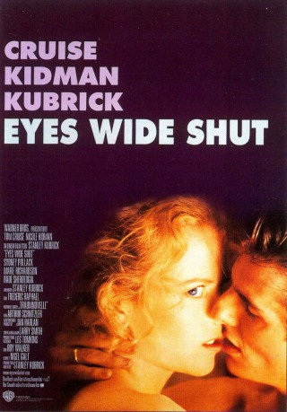
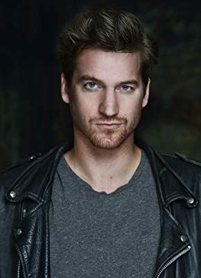
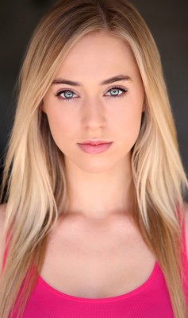

#3738 Eyes Wide Shut
 gesehen am 18.06.2016
gesehen am 18.06.2016
 
 IMDB-Wertung: 7.3 / 10
IMDB-Wertung: 7.3 / 10  Tomatometer: 75
Tomatometer: 75  Metascore: 0
Metascore: 0 
Der Arzt Dr.Bill Harford und seine Frau Alice führen eine ganz normale Ehe, bis diese ihm gesteht, dass sie ihn einmal beinahe betrogen hätte. Dies stürzt Bill in eine Krise und führt ihn auf eine Odyssee sexueller und moralischer Erfahrungen.
Jahr: 1999
Dauer: 159 Minuten
FSK: 16
Land: England Studio: Warner Bros.Tonspuren: DD5.1 - ,
Untertitel:
Auflösung: 1080p (1920x1080) Größe: 12288 MB
Genre: Thriller, Drama, Mystery
Regisseur:  Stanley Kubrick
Stanley Kubrick
Drehbuch: Marcello Olivieri
Soundtrack:
Darsteller:
 Tom Cruise als Dr. William Harford
Tom Cruise als Dr. William Harford Nicole Kidman als Alice Harford
Nicole Kidman als Alice Harford Sydney Pollack als Victor Ziegler
Sydney Pollack als Victor Ziegler- Marie Richardson als Marion
 Rade Serbedzija als Milich
Rade Serbedzija als Milich- Todd Field als Nick Nightingale
 Vinessa Shaw als Domino
Vinessa Shaw als Domino Sky du Mont als Sandor Szavost
Sky du Mont als Sandor Szavost Fay Masterson als Sally
Fay Masterson als Sally Leelee Sobieski als Milich's Daughter
Leelee Sobieski als Milich's Daughter-  Thomas Gibson als Carl
 Peter Benson als Bandleader
Peter Benson als Bandleader- Michael Doven als Ziegler's Secretary
- Julienne Davis als Mandy
 Togo Igawa als Japanese Man #1
Togo Igawa als Japanese Man #1 Sam Douglas als Cab Driver
Sam Douglas als Cab Driver Angus MacInnes als Gateman #1
Angus MacInnes als Gateman #1- Brian W. Cook als Tall Butler
 Alan Cumming als Desk Clerk
Alan Cumming als Desk Clerk- Cindy Dolenc als Girl at Sharky's
 Treva Etienne als Morgue Orderly
Treva Etienne als Morgue Orderly- Emilio D'Alessandro als Man at Newsstand , uncredited
- Tres Hanley als Coffee Shop Manager , uncredited
- Christiane Kubrick als Woman Sitting Behind Dr. Harford at Café Sonata , uncredited
- Stanley Kubrick als Bearded Cafe Patron , uncredited
-  Taylor Murphy als Masked Party Principal , uncredited
 George Segal als Stephen Blume , archive footage, uncredited
George Segal als Stephen Blume , archive footage, uncredited- Madison Eginton als Helena Harford
- Jackie Sawiris als Roz
- Leslie Lowe als Illona Ziegler
- Louise J. Taylor als Gayle
- Stewart Thorndike als Nuala
- Randall Paul als Harris
- Lisa Leone als Lisa
- Kevin Connealy als Lou Nathanson
- Mariana Hewett als Rosa
- Dan Rollman als Rowdy College Kid
- Gavin Parry als Rowdy College Kid
- Chris Pare als Rowdy College Kid
- Adam Lias als Rowdy College Kid
- Christian Clarke als Rowdy College Kid
- Kyle Whitcombe als Rowdy College Kid
- Gary Goba als Naval Officer
- Florian Windorfer als Café Sonata Maître D'
- Eiji Kusuhara als Japanese Man #2
- Abigail Good als Masked Party Principal / Mysterious Woman
- Leon Vitali als Red Cloak
- Carmela Marner als Waitress at Gillespie's
- Phil Davies als Stalker
- Clark Hayes als Hospital Receptionist
Datei: X:\1999\Eyes Wide Shut (1999, FSK16, 1920x1080).mkv seit 30.05.2016
Festplatte: HD 1996-2002
 Es gibt insgesamt 81 Filme in der Gruppe '1999'
Es gibt insgesamt 81 Filme in der Gruppe '1999'